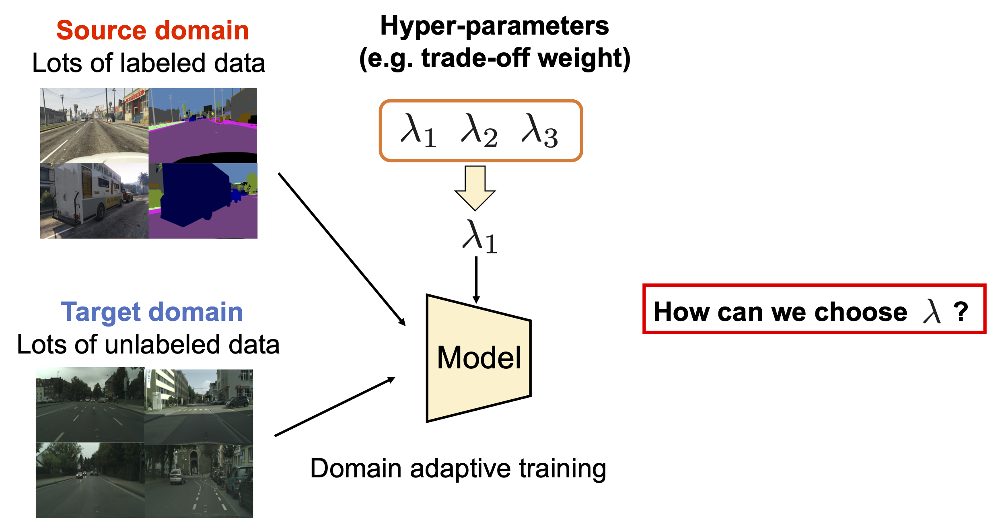
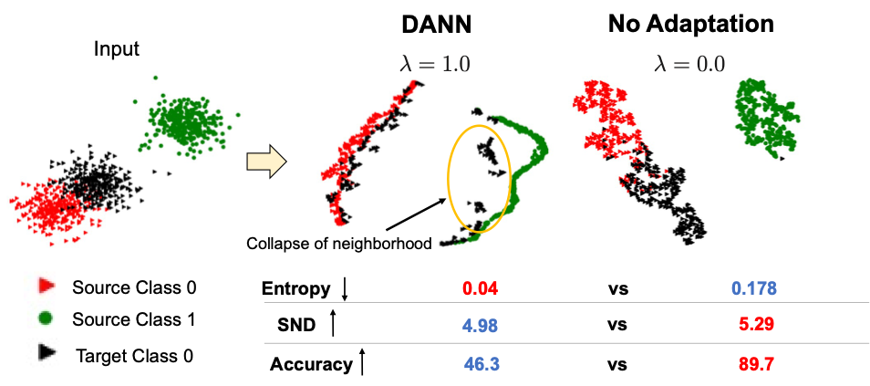
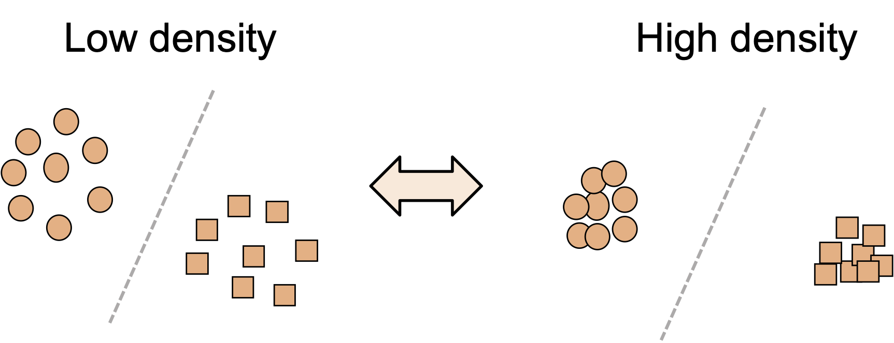
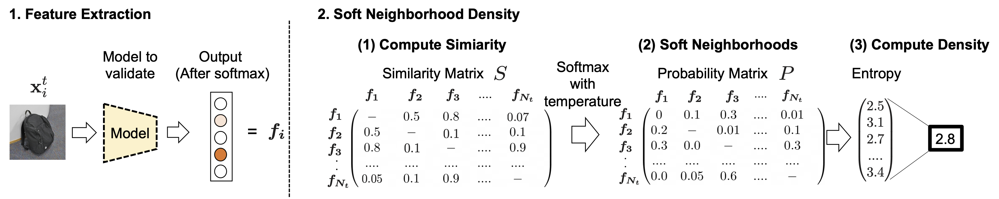
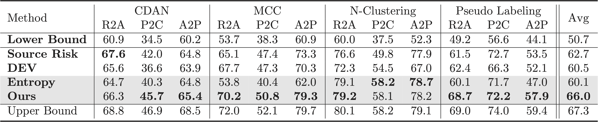
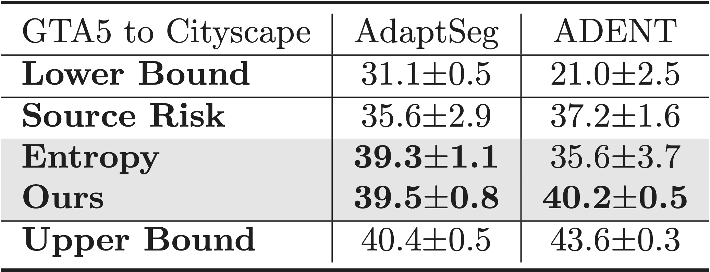
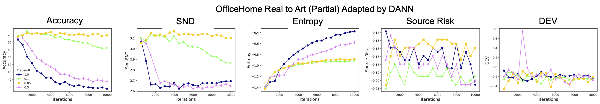
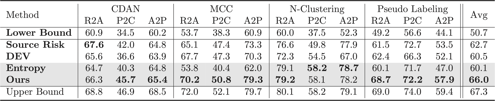
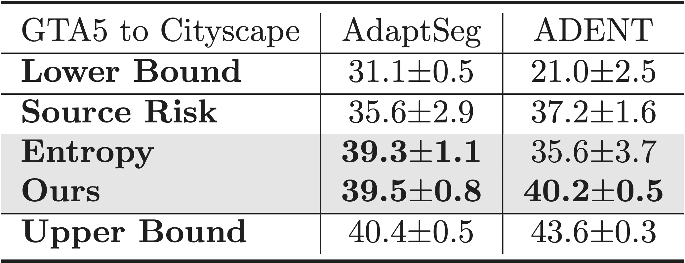
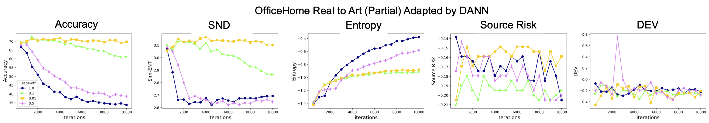

Tune it the Right Way: Unsupervised Validation of Domain Adaptation via Soft Neighborhood Density
ICCV2021
Kuniaki Saito1, Donghyun Kim1, Stan Sclaroff1, Trevor Darrell2, Kate Saenko1,3
1: Boston University, 2: University of California, Berkeley, 3: MIT-IBM Watson AI Lab
[Paper] [Code] [Slides]
Dataset bias and unsupervised domain adaptation

Figure.1: The example of dataset bias. A model trained on a specific domain often perform poorly on other domains.
Supervised machine learning needs a lot of labeled examples. Test sets can be from distributions different from training data. Such “dataset bias” results in reduced accuracy on the test (target) domain. Unsupervised domain adaptation aims to reduce the bias by using unlabeled target data.
Problem: How can we set an appropriate hyper-parameter to train a model?

Given the assumption that we do not have labeled data in the target domain, it is hard to pick a suitable hyper-parameter to train the model.
Related Work: Entropy to measure the discriminative target representations.

Entropy of the classifier measures uncertainty in prediction. Smaller entropy indicates discriminative target features.
But, entropy cannot detect the case where target samples are wrongly aligned (Figure) since it does not consider any relationship between samples.
Then, can we make a criterion that considers how discriminative target features are by using the relationship between samples nearby?
Intuition for Soft Neighborhood Density (SND)

Given a well-adapted model, target samples of the same class nearby will form dense neighborhoods. Our criterion identifies samples classified into the same class in a soft manner and measure their density.
Computing SND

1. Extract target features from the last softmax output. The output is class-discriminative and suitable to identify samples in the same class
in a soft manner.
2. Compute similarity between target samples.
3. Apply softmax with temperature to the similarity matrix. The obtained probability distribution shows which samples are close with each other.
Since we are using classification output as input features and applying tempeature scaling to ignore dissimilar samples, the distribution shows similarity to samples nearby.
4. Compute entropy of the distribution. Larger entropy indicates that the samples are tightly clustered since the probability will be uniform within the cluster. We pick a model with large entropy.
Discussion: advantage and limitation
1. The criterion can consider how well target samples are clustered, thus can
avoid some failure cases.
2. The model needs to be trained for some iterations to make SND work well.
E.g., softmax output is almost uniform before training.
3. We observe that all criteria we tested (including SND) is not so effective
to tune some hyper-parameters such as learning rate on the source samples
and layer-wise learning rate setting.
Results on partial domain adaptation

We test on four adaptation methods and can see 3.3% improvement over baselines.
Results on semantic segmentation

SND is effective to find hyper-parameters for semantic segmentation too.
SND and Accuracy

SND tracks accuracy better than baseline methods.
Reference
@article{saito2021tune,
title={Tune it the Right Way: Unsupervised Validation of Domain Adaptation via Soft Neighborhood Density},
author={Saito, Kuniaki and Kim, Donghyun and Teterwak, Piotr and Sclaroff, Stan and Darrell, Trevor and Saenko, Kate},
journal={arXiv preprint arXiv:2108.10860},
year={2021}
}
2. The model needs to be trained for some iterations to make SND work well. E.g., softmax output is almost uniform before training.
3. We observe that all criteria we tested (including SND) is not so effective to tune some hyper-parameters such as learning rate on the source samples and layer-wise learning rate setting.

We test on four adaptation methods and can see 3.3% improvement over baselines.
Results on semantic segmentation

SND is effective to find hyper-parameters for semantic segmentation too.
SND and Accuracy

SND tracks accuracy better than baseline methods.
Reference
@article{saito2021tune,
title={Tune it the Right Way: Unsupervised Validation of Domain Adaptation via Soft Neighborhood Density},
author={Saito, Kuniaki and Kim, Donghyun and Teterwak, Piotr and Sclaroff, Stan and Darrell, Trevor and Saenko, Kate},
journal={arXiv preprint arXiv:2108.10860},
year={2021}
}